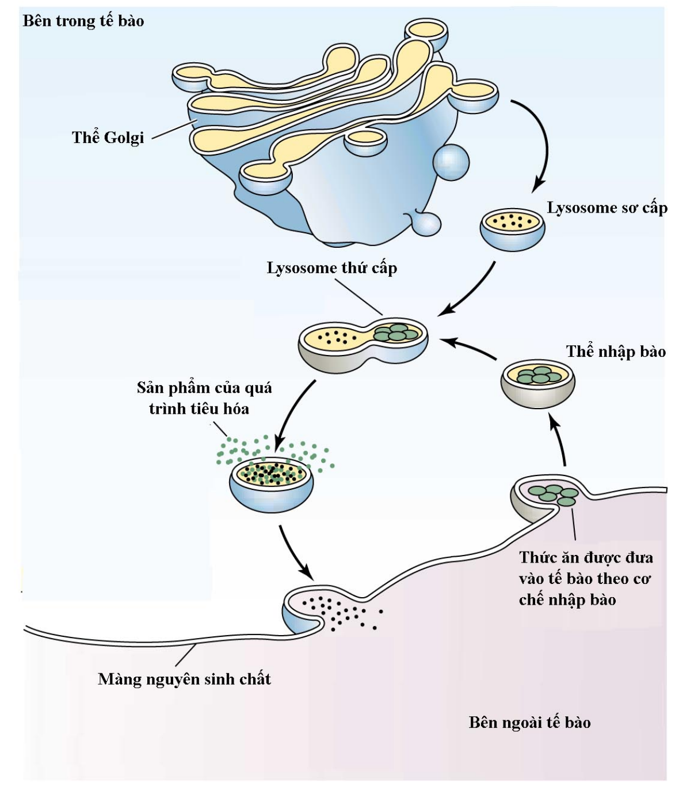

Theo dõi đích phân hủy và dự trữ trong tế bào
VN02 · Các bào quan và cấu trúc chức năng · 3 trắc nghiệm và 1 tự luận
Bắt đầu học ↓Học trọn chương và làm bộ 80 trắc nghiệm, 15 tự luận
Sau buổi này
- Phân biệt lysosome, proteasome và peroxisome bằng loại hàng và vị trí.
- Nối mạng lưới nội chất, không bào và lạp thể với chức năng.
Gợi nhớ
Một túi đầy vật chất chưa tiêu hóa, một protein hòa tan bị hỏng và peroxide cần xử lý sẽ gợi ý ba bộ máy nào?
Học kiến thức qua hình
Quan sát hình minh họa

Sơ đồ giữ đường đi của túi vào tế bào và đường gặp lysosome.
Quan sát · Lần theo túi nhập bào từ màng. Tìm điểm nó gặp tuyến khoang có enzyme trên hình.
Dự đoán · Nếu một nhãn cho thấy hàng đã tới đúng khoang nhưng vẫn tồn tại lâu, kiểm lỗi vận chuyển hay lỗi phân giải tiếp theo?
Mở giải thích sau khi dự đoán
So tín hiệu cùng vị trí với lysosome và theo dõi sự mất của hàng qua thời gian. Đến đúng nhưng không được phân giải hướng đến chức năng khoang, nơi pH acid giúp nhiều enzyme thủy phân hoạt động.
| Chất tích lũy | Vị trí hoặc dấu hiệu | Bộ máy nghi ngờ |
|---|---|---|
| Hàng từ túi nhập bào | Khoang đáng lẽ cần pH acid | Lysosome |
| Protein hòa tan gắn ubiquitin | Bào tương hoặc nhân | Proteasome |
| H₂O₂ | Bào quan một màng; hoạt tính catalase thấp | Peroxisome |
Đọc loại chất tích lũy và khoang chứa trước khi kết luận.
Đọc hình để tự rút ra cơ chế
Quan sát · Trong hồ sơ U, hàng từ nhập bào đã đến đích nhưng còn nguyên trong khoang có pH tăng.
Dự đoán · Thiếu vận chuyển hàng tới khoang hay thiếu khả năng thủy phân trong khoang hợp lý hơn?
Mở giải thích sau khi dự đoán
Hàng đến đúng nơi. pH tăng có thể làm giảm hoạt tính enzyme lysosome, khiến hàng tồn.
Lysosome và proteasome
Lysosome là khoang có màng, chứa enzyme thủy phân hoạt động tốt ở pH acid; nhận hàng từ hệ nội màng. Proteasome là phức hợp protein, thường phân hủy protein đã đánh dấu ubiquitin trong bào tương hoặc nhân.
Peroxisome
Peroxisome là bào quan một màng, thực hiện một số phản ứng oxy hóa. Catalase chuyển H₂O₂ thành nước và O₂, giúp kiểm soát peroxide phát sinh trong khoang.
Những khoang khác
Lưới nội chất trơn tham gia tổng hợp lipid và có thể dự trữ Ca²⁺ tùy loại tế bào. Không bào thực vật tham gia dự trữ, phân giải và duy trì sức trương. Lục lạp quang hợp là một kiểu lạp thể; các lạp thể khác có thể chuyên dự trữ hoặc chứa sắc tố.
Liên hệ thực tế
Để định vị một lỗi phân hủy, theo dõi đồng thời nơi tích lũy, loại cơ chất và dấu hiệu hoạt tính. Một ảnh túi lớn đơn lẻ chưa phân biệt được tăng nhận hàng với giảm phân hủy.
Cụm bài tập
Ba hồ sơ gián đoạn phân hủy
U còn nguyên hàng đã nhập trong khoang vốn có pH acid; pH tăng. V tích lũy protein hòa tan gắn ubiquitin. W tăng peroxide trong một bào quan một màng; catalase đo được thấp.
Đối chiếu bài làm
Chọn một chỗ còn phân vân. Giải thích lại bằng lời của mình rồi thử một câu cùng dạng.